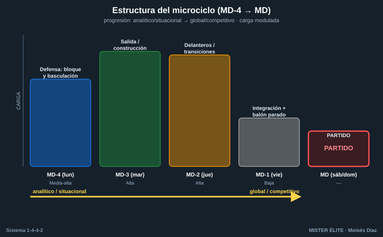
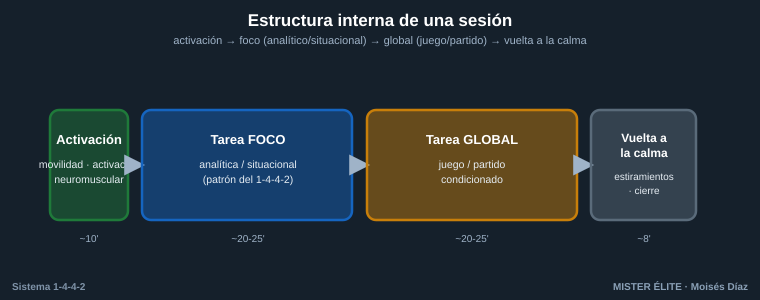

Plan de sesiones — 2 microciclos ejemplo
Cómo encajar las 27 tareas del banco en una semana real. Se proponen dos microciclos con foco distinto. Las referencias entre corchetes apuntan a la ficha de cada tarea. Convención de posiciones y distancias en el README.
Cómo usar estos microciclos
- Son plantillas, no dogma: ajusta volumen y categoría (F / A / S) a tu grupo.
- Se asume una semana competitiva tipo de 4 sesiones + partido (modelo MD-4 a MD-1, donde MD = día de partido). En grupos amateur/formativos con menos sesiones, prioriza la columna "Foco principal".
- Estructura interna de cada sesión: activación → tarea analítica/situacional (foco) → tarea más global (juego/partido condicionado) → vuelta a la calma.
- Principio de progresión semanal: de analítico/situacional (lunes-martes) hacia global/competitivo (jueves-viernes), bajando carga el día previo al partido.
- Una tarea repetida entre microciclos cambia de variante (más difícil) para progresar, no se repite idéntica.


Microciclo A — Implantación del sistema (semana base)
Objetivo de la semana: asentar los pilares del 1-4-4-2 — salida con superioridad, bloque y basculación, juego de los dos delanteros — e integrarlo en partido. Ideal para pretemporada o las primeras semanas con el sistema.
| Día | Foco principal | Tareas | Carga |
|---|---|---|---|
| MD-4 (lun) | Fase defensiva: bloque y basculación | T5 basculación de las dos líneas → T6 distancia entre líneas → T7 8v8 bloque medio | Media-alta |
| MD-3 (mar) | Salida de balón / construcción | T2 rondo de salida orientada → T1 salida 4+2 vs 2 → T3 construcción dirigida | Alta |
| MD-2 (jue) | Juego de los dos delanteros + centros | T16 pared y descarga → T14 uno baja/uno rompe → T15 banda + centro lateral | Alta |
| MD-1 (vie) | Integración ligera + balón parado | T4 salida 11v11 con zonas (volumen reducido) + ensayo de ABP a favor y en contra (T26 córner ofensivo y T27 defensa mixta de córner) | Baja |
| MD (sáb/dom) | Partido | — | — |
Notas del microciclo A: - El lunes fija las distancias del bloque (8–12 m entre líneas) antes de pedir cualquier press: sin compacidad no hay sistema. - El martes y el jueves son los días de mayor carga (alejados del partido): salida y ataque, las fases que más repetición necesitan. - El viernes prioriza frescura y la puesta a punto de la estrategia.
Microciclo B — Competición y rival (semana de ajuste)
Objetivo de la semana: afinar pressing y transiciones, y preparar el partido contra la estructura concreta del rival. Para semanas de calendario con un objetivo táctico claro.
| Día | Foco principal | Tareas | Carga |
|---|---|---|---|
| MD-4 (lun) | Pressing y gatillos | T10 press de los 2 delanteros → T11 gatillo del lateral → T12 press alto 8v8 | Media-alta |
| MD-3 (mar) | Transiciones (ambos sentidos) | T19 contrapresión 5 s → T21 transición ofensiva por bandas → T22 las cuatro transiciones | Alta |
| MD-2 (jue) | Defensa del área + altura de bloque | T8 defensa del centro lateral → T9 línea de 4 y fuera de juego → T13 cambio de altura por señal | Alta |
| MD-1 (vie) | Aplicación al rival (afinado) | T25 partido aplicado al rival (con paradas tácticas, volumen reducido) + repaso de ABP (T26 / T27) | Baja-media |
| MD (sáb/dom) | Partido | — | — |
Notas del microciclo B: - El lunes entrena los gatillos del press (pase al lateral → salto del medio); el martes los aprovecha en transición tras robo. - El jueves combina defensa del centro lateral y línea de fuera de juego con la decisión de altura del bloque (T13), que cierra el trabajo defensivo de la semana. - El viernes la T25 traduce todo a la estructura del rival real: es la sesión más específica de la semana.
Sesión global de evaluación (opcional)
Para cerrar una fase o evaluar el aprendizaje, usar la T23 — 11v11 con bonificaciones por fase o la T24 — partido con zonas de puntos, activando solo las bonificaciones de los comportamientos que se han trabajado. El marcador por puntos da una medida objetiva de cuánto ha calado el modelo.
Mapa rápido tarea → bloque
| Bloque | Tareas | Archivo |
|---|---|---|
| 1. Salida / construcción | T1–T4 | 01-salida.md |
| 2. Organización y basculación defensiva | T5–T9 | 02-defensa.md |
| 3. Pressing | T10–T13 | 03-pressing.md |
| 4. Dos delanteros y centros | T14–T18 | 04-delanteros-centros.md |
| 5. Transiciones | T19–T22 | 05-transiciones.md |
| 6. Partido condicionado | T23–T25 | 06-partido-condicionado.md |
| 7. Balón parado | T26–T27 | 07-balon-parado.md |